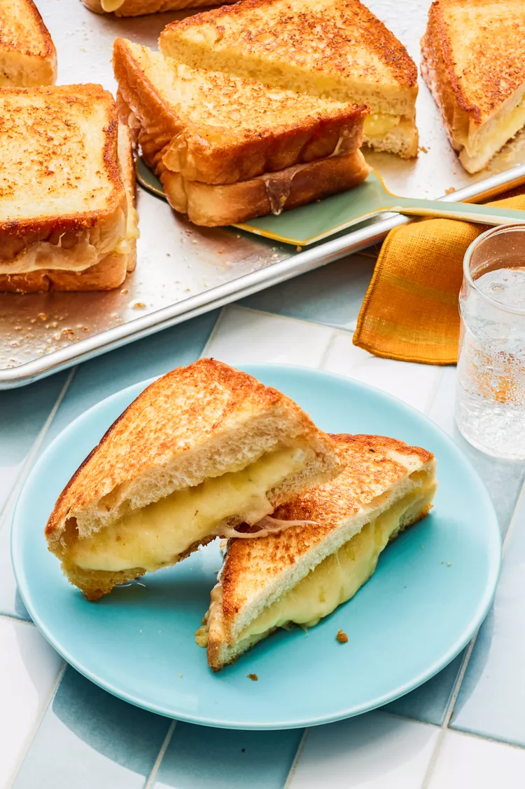

Grilled Cheese Sandwich

Grilled Cheese Sandwich. What's not to like?
There's nothing to explain. This is a Grilled Cheese Sandwich. What could go wrong?
Ingredients
- 6 tablespoons (3 ounces) unsalted butter
- 2 tablespoons herbed goat cheese
- 10 thick white bread slices
- 5 sharp white cheddar cheese slices
- 5 provolone cheese slices
- 5 Swiss cheese slices
Method
- Preheat the oven to 425°F with a rack in the upper third of the oven. Place the butter on a rimmed baking sheet and place in the preheated oven until the butter melts, about 5 minutes.
- Spread goat cheese evenly on 5 of the bread slices.
Carefully tilt the pan so the melted butter coats the bottom. Arrange all of the bread slices in a single layer in the melted butter on the baking sheet. Ensure the goat cheese is facing up.
Place 1 cheddar slice on each bread slice with goat cheese and place 1 slice each of provolone and 1 slice of Swiss on each plain bread slice.
- Return to the oven and bake at 425°F until the cheese is bubbly and the bread is beginning to brown, about 7 minutes.
- Remove from the oven and assemble the sandwiches by combining each of the goat cheese slices with the provolone and Swiss slices. Return to oven and bake until bread is golden and toasted, 3 to 4 minutes.